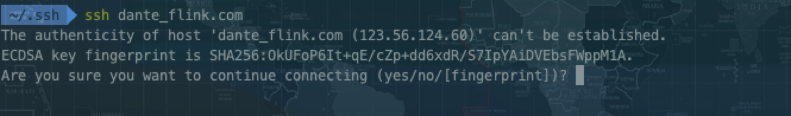
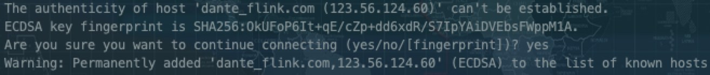
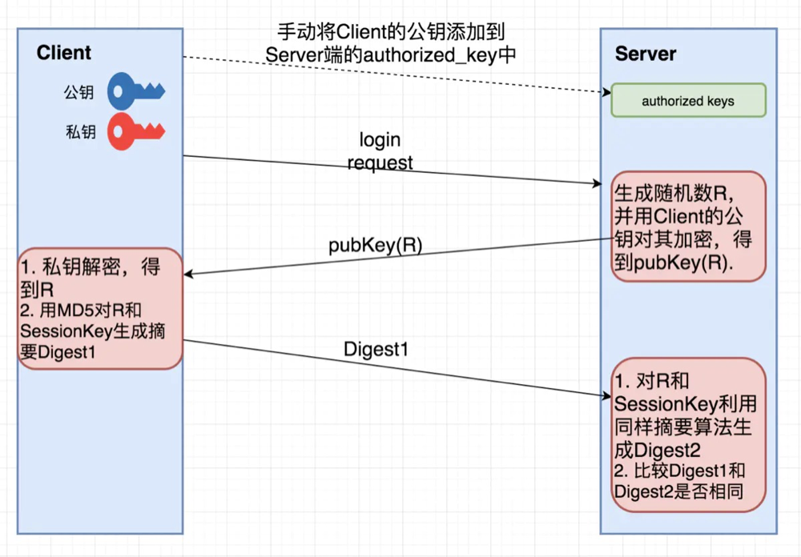
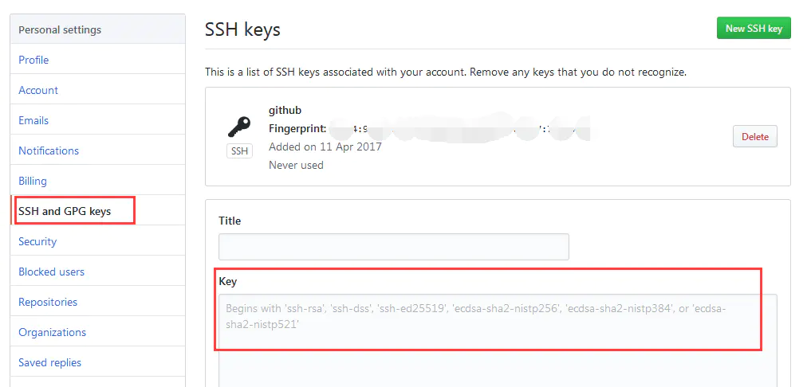
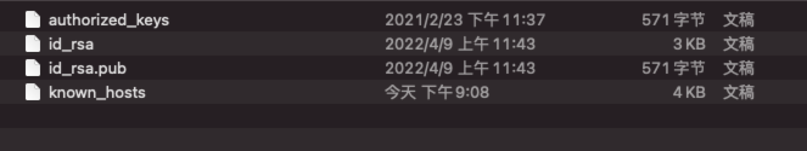
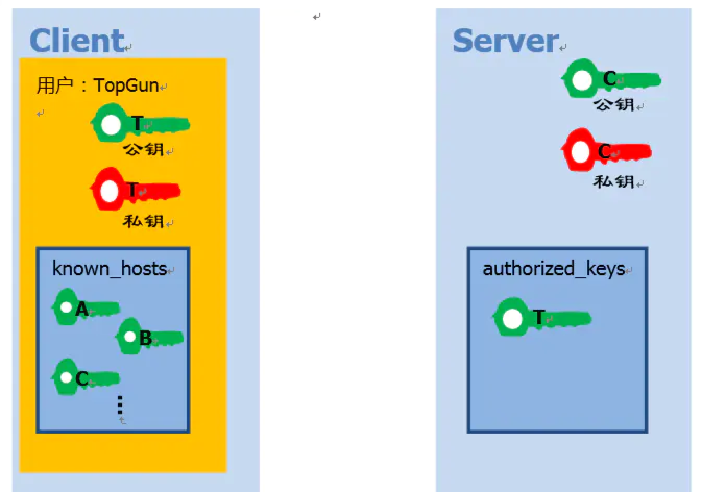

初识SSH
维基百科是这样描述ssh协议的 ：
Secure Shell（安全外壳协议，简称SSH）是一种加密的网络传输协议，可在不安全的网络中为网络服务提供安全的传输环境[1]。SSH通过在网络中创建安全隧道（英语：secure channel）来实现SSH客户端与服务器之间的连接[2]。SSH最常见的用途是远程登录系统，人们通常利用SSH来传输命令行界面和远程执行命令。
通常是用来建立一条相对安全的连接，而不是明文传输。
SSH原理
同样，SSH协议也要解决三个问题，即
- 如何保证信息的保密性？
- 如和保证信息的完整性？
- 如何识别对方身份？
其中前两个问题，通过使用对称加密与非对称加密、数字签名可以解决，在之前的HTTPS相关的文章中都有详细的解释，现在我们重点讨论第三个问题，如何识别对方身份？我们知道HTTPS是通过CA机构颁发证书的方式来确认对方的身份，而SSH的公钥和私钥是客户端自己生成，所以没有CA机构认证。SSH协议有两种识别对方身份的方式
- 基于口令的认证
- 基于公钥认证
口令认证
基于口令的认证，我个人认为，实际上基于口令的认证是第一次的时候需要与 “正确的对方”建立连接,次此连接之后给主机生成一个唯一的host_key，相当于”认识“了这台主机，下次建立链接时，如果与一台错误的主机建立链接时，通过host_key便可以识别出来！
如下图，第一登陆的时候:

图中显是的是，先通过RSA算法对域名+ip这个key结合公钥对应的唯一信息生成加密串,然后做一个hash提取一个比较短的摘要作为指纹（实际上这只是通俗的解释，指纹的生成用到ECDSA算法，这个算法比较复杂，本人也没详细了解就不做过多的介绍了）,询问你是否继续连接

其中know hosts用来存放已经接受识别的身份。
再下一步就是输入密码进行登录了，其实验证是双向的，指纹验证是验证服务器，用户密码就是服务器再验证客户端了。
公钥认证
第一种验证方式，再服务器验证客户端的时候，每次都得使用密码来进行验证，所以通过有了第二种方式来进行免密登录。
具体流程如下:
- Client将自己的公钥存放在Server上，追加在文件authorized_keys中。
- Server端接收到Client的连接请求后，会在authorized_keys中匹配到Client的公钥pubKey，并生成随机数R，用Client的公钥对该随机数进行加密得到pubKey(R)
，然后将加密后信息发送给Client。 - Client端通过私钥进行解密得到随机数R，然后对随机数R和本次会话的SessionKey利用MD5生成摘要Digest1，发送给Server端。
- Server端会也会对R和SessionKey利用同样摘要算法生成Digest2。
- Server端会最后比较Digest1和Digest2是否相同，完成认证过程。

在步骤1中，Client将自己的公钥存放在Server上。需要用户手动将公钥copy到server上。这就是在配置ssh的时候进程进行的操作。下图是GitHub上SSH keys设置视图：

SSH的最佳实践
SSH生成的文件

- d_rsa：保存私钥
- id_rsa.pub：保存公钥
- authorized_keys：保存已授权的客户端公钥
- known_hosts：保存已认证的远程主机ID

需要注意的是：一台主机可能既是Client，也是Server。所以会同时拥有authorized_keys和known_hosts。
有关文件的常见疑问
- known_hosts中存储的内容是什么？
known_hosts中存储是已认证的远程主机host key，每个SSH Server都有一个secret, unique ID, called a host key。
- host key何时加入known_hosts的？
当我们第一次通过SSH登录远程主机的时候
- 为什么需要known_hosts？
最后探讨下为什么需要known_hosts，这个文件主要是通过Client和Server的双向认证，从而避免中间人（man-in-the-middle attack）攻击，每次Client向Server发起连接的时候，不仅仅Server要验证Client的合法性，Client同样也需要验证Server的身份，SSH client就是通过known_hosts中的host key来验证Server的身份的。
这中方案足够安全吗？当然不，比如第一次连接一个未知Server的时候，known_hosts还没有该Server的host key，这不也可能遭到中间人攻击吗？这可能只是安全性和可操作性之间的折中吧。
使用命令
记住三步走:
1 | 1.客户端生成公钥私钥 |

...
...
This is copyright.